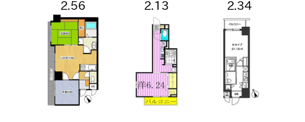
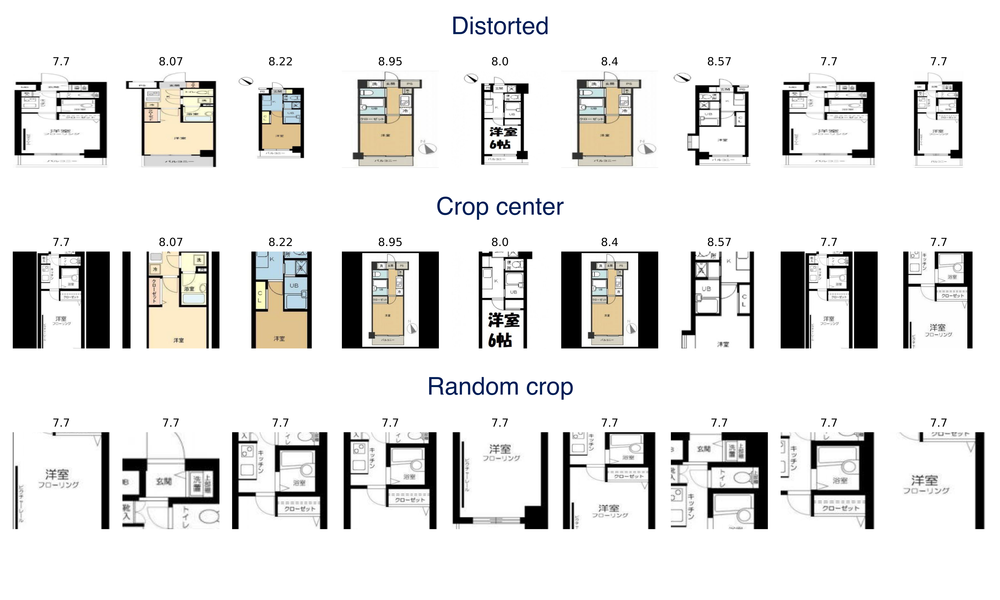
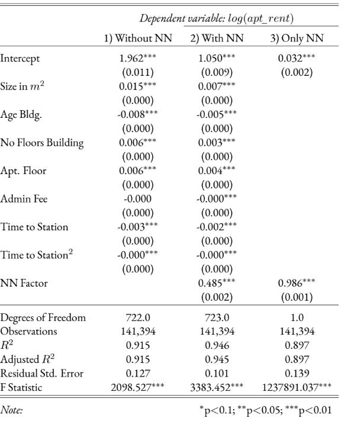
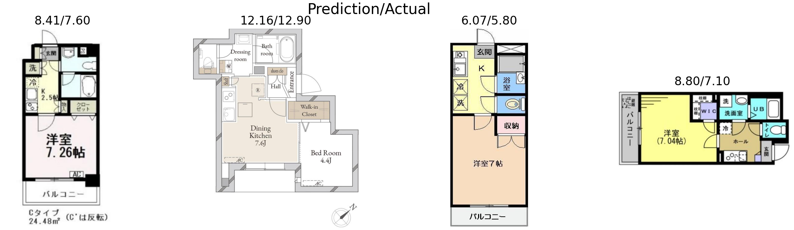
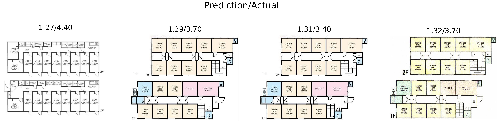
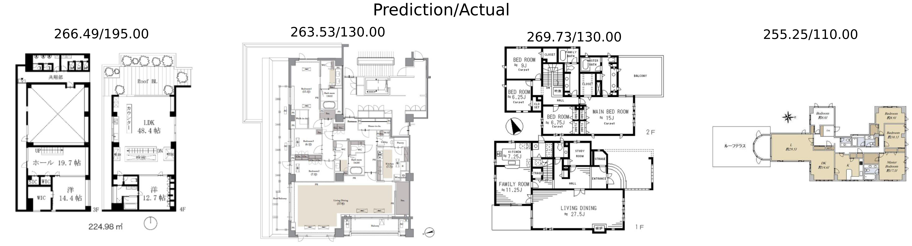
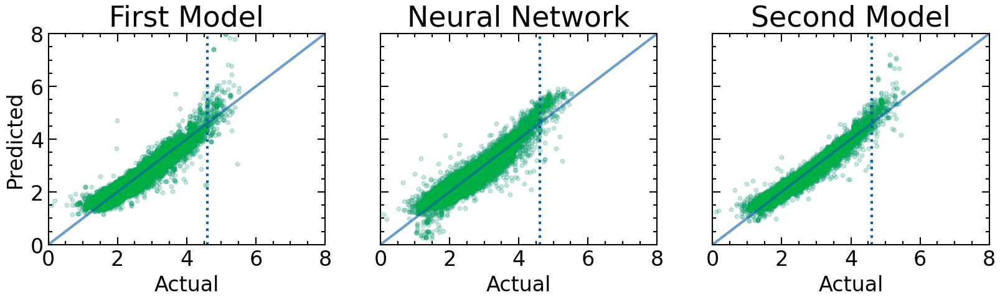

Hypothesis: floor plan images contain information about consumer preferences, so they should help with predictions
Further research into this topic might lead to further insights into the price structure of real estate
| Structural | Environmental |
|---|---|
| Apartment size | Name of Closest station |
| Floor of apartment | No. of supermarkets |
| Material used in construction | Distance to the city center |
| Floor layout | No. of schools |
| Kitchen Space | No. of Parks |
| Interior design and finish |
Hattori, Okamoto, and Shibata (2019) use Principal Component Analysis to extract feature vectors of floorplan data
[H]owever, the differences are not significant and it is difficult to find merits to use FPIs for rent prediction model. - Hattori, Okamoto, and Shibata (2019)

Figure 1: An example of randomly chosen floorplans and the log of their rent prices. (rent price denoted in 10000 Yen units.)
| Variable | Explanation |
|---|---|
| apt_rent | Rent per month of the listing. In units of 10000 Yen |
| Apt. Floor | The floor the property is on |
| Size in \( m^{2} \) | Size of property in \(m^2\) |
| No Floors bldg | No of floors of the building |
| Age bldg. | No. of years ago the property was built |
| Style | Description of the layout type of the apartment (1K, 1LDK,… ) |
| Admin fee 10,000¥ | Amount of monthly administration fee |
| Station | Name of the closest public transport station |
| Method | How “Time to station” is measured (foot, bus, or car) |
| Time to station | No. minutes of taking “method” to the next station |
Resnet50 architecture (He et al. 2015)
torchvision (Paszke et al. 2019)
Resnet50 model

Figure 2: This figure showcases the properties of each resizing method. The first and second rows compare nine floorplans. The third shows different crops of the leftmost floorplan.

Figure 3: Regression table of the 3 estimated models (categorical features omitted).
| total | train | test | |
|---|---|---|---|
| Model 1: \( R^{2} \) MLR Without NN | 0.915 | 0.915 | 0.914 |
| Model 2: \( R^{2} \) MLR With NN | 0.945 | 0.951 | 0.923 |
| Model 3: \( R^{2} \) LR NN only | 0.897 | 0.917 | 0.817 |
| N | 141,394 | 113,116 | 28,278 |
| Model | Total Error (10,000 Yen) | MAE (10,000 Yen) |
|---|---|---|
| Model 1 (Baseline) | 43813 | 1.5493 |
| Model 2 (w/ NN) | 32131 | 1.1362 |
Reduction of error of \( \approx 26\% \).

Figure 4: NN predictions and ground truths for a randomly extracted sample of the dataset. (in 10,000¥)

Figure 5: The four predictions the model predicted the lowest rent for. (in 10,000¥)

Figure 6: The floorplans of four apartments with very highest predicted rents. (in 10,000¥)

Figure 7: The floorplans of four apartments with very highest predicted rents. (in 10,000¥)